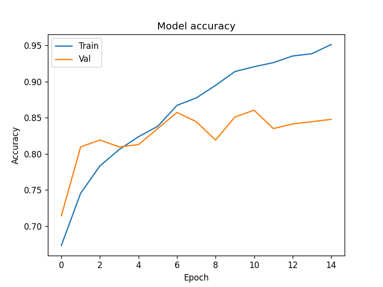
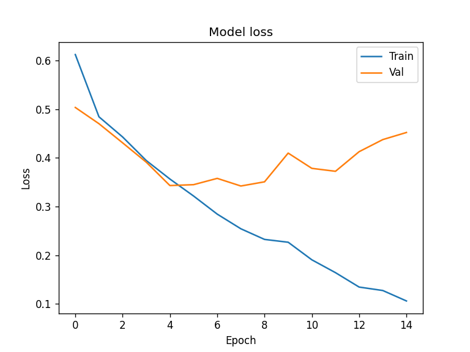
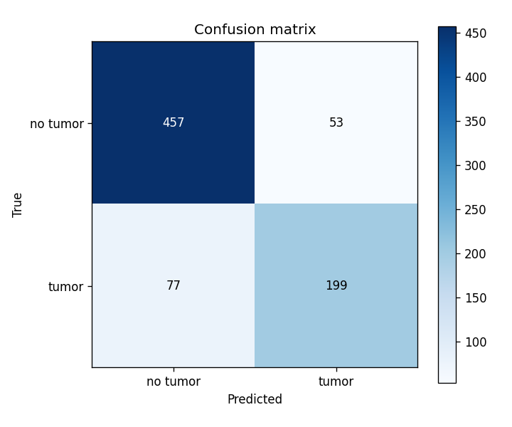
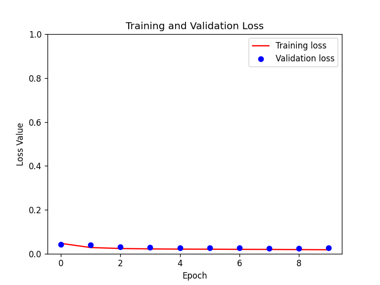
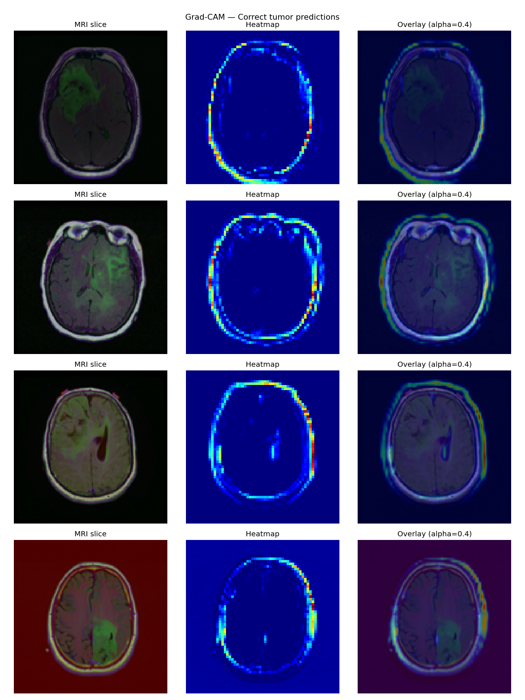
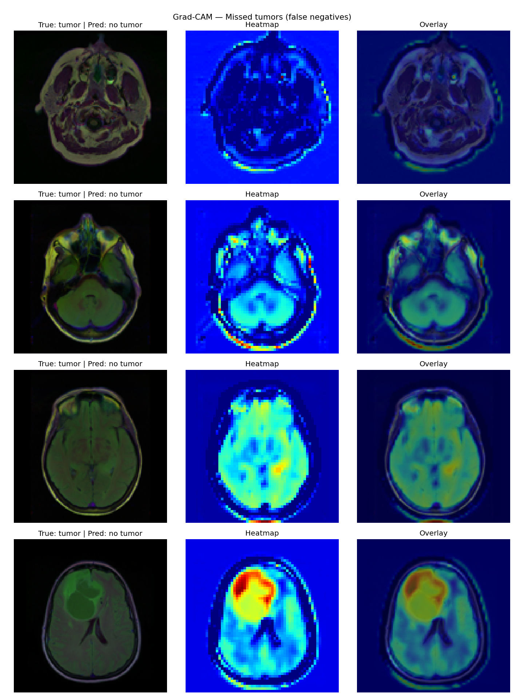

Brain tumor detection in MRI scans is a high-stakes medical imaging problem. Manual diagnosis is time-consuming and subject to inter-observer variability, making it a strong candidate for deep learning automation. This project implements an end-to-end pipeline addressing the problem from three angles: detecting whether a tumor is present in a scan (classification), locating exactly where it is (segmentation), and understanding what the model has learned (interpretability via Grad-CAM).
The dataset is the LGG Brain MRI Segmentation dataset, containing 3,929 MRI slices from 110 patients diagnosed with lower-grade gliomas (LGG), each paired with a pixel-level binary segmentation mask. Labels for classification are derived from the masks: a slice is positive if any mask pixel is non-zero.
Training a deep neural network from scratch requires large labeled datasets and significant compute. Transfer learning addresses this by reusing a model pre-trained on a large general dataset (ImageNet) and adapting it to a new, smaller task. The pretrained model has already learned rich feature representations — edges, textures, shapes — that generalize across visual domains, including medical imaging.
In this project, MobileNetV2 serves as the frozen backbone for the classifier. MobileNetV2 is a lightweight architecture based on inverted residual blocks with linear bottlenecks, designed to be computationally efficient. Its weights are kept fixed; only a small task-specific head is trained on the brain MRI data. This head consists of a Global Average Pooling layer, a Dropout layer for regularization, and a Dense softmax output for binary classification.
A baseline scratch-built CNN (two convolutional blocks followed by a fully-connected head) was also trained to serve as a comparison point for the transfer learning approach.
While classification answers "is there a tumor?", segmentation answers "where exactly?" at the pixel level. U-Net is the standard architecture for biomedical image segmentation. It follows an encoder–decoder design:
Here, the encoder is a frozen MobileNetV2 backbone and the decoder is a pix2pix-style upsampling network. Because tumor pixels make up less than 1% of all pixels in this dataset, a class weight of 5× is applied to tumor pixels during training to prevent the model from collapsing to predicting all-background.
Gradient-weighted Class Activation Mapping (Grad-CAM) visualizes which image regions a CNN uses to reach a prediction. It computes the gradient of the predicted class score with respect to the final convolutional layer's feature maps. These gradients are globally averaged into channel weights, and a weighted sum of the channels produces a spatial heatmap, which is upsampled and overlaid on the original image.
In a medical context, Grad-CAM lets us verify whether the model attends to clinically relevant regions, and reveals where it fails when it makes a wrong prediction.
| Property | Value |
|---|---|
| Source | Kaggle — mateuszbuda/lgg-mri-segmentation |
| Total slices | 3,929 |
| Train / Test split | 3,143 / 786 (80/20) |
| Tumor-positive slices | 34.9% |
| Image resolution | 128 × 128 × 3 (pre-contrast, FLAIR, post-contrast) |
Two classifiers were evaluated: a scratch-built CNN (baseline) and a MobileNetV2 transfer learning model (frozen backbone). Both were trained for 10–15 epochs with Adam and categorical cross-entropy loss.
| Model | Test Accuracy |
|---|---|
| Scratch CNN (baseline) | 82.44% |
| MobileNetV2 (frozen, transfer learning) | 79.39% |
The training curves below show the MobileNetV2 model's behavior across epochs. Validation accuracy plateaus around 83–86% early on and then declines, while training accuracy continues to rise — a sign of mild overfitting in the later epochs.


The confusion matrix on the held-out test set is shown below.

| Metric | Value |
|---|---|
| Accuracy | 83.46% |
| Precision (tumor) | 0.79 |
| Recall (tumor) | 0.72 |
| F1-score (tumor) | 0.75 |
| False Negatives (missed tumors) | 77 |
The U-Net segmenter was trained for 10 epochs. Both training and validation loss converge to very low values (~0.02–0.03) and stay close throughout — indicating good generalization without overfitting.

Grad-CAM was applied to the trained classifier to visualize attention on two groups of cases.


On transfer learning vs. scratch training: The MobileNetV2 frozen backbone (79.39%) performed slightly below the scratch CNN (82.44%). This is somewhat counterintuitive but explainable: MobileNetV2 was pretrained on natural images (RGB photographs of everyday objects), whereas brain MRI data has a very different visual distribution — low contrast, grayscale-like structure, and domain-specific textures. With only 2,562 trainable parameters in the classification head, the frozen features may not adapt sufficiently to this domain shift. Fine-tuning some of the later encoder layers would likely close this gap.
On classification errors: The 77 false negatives (missed tumors) represent the primary clinical concern. In medical screening, recall is more critical than precision — a missed tumor is more dangerous than a false alarm. The current recall of 0.72 means roughly one in four tumors goes undetected. Stronger data augmentation, an unfrozen encoder, or a Dice-weighted loss could push recall higher.
On segmentation: The tight train/validation loss curves suggest the U-Net generalizes well. However, the very low absolute loss values (~0.02) should be interpreted carefully: when 99%+ of pixels are background, a model can achieve very low cross-entropy simply by learning to classify background correctly. Dice score or IoU computed only on tumor pixels would give a more honest picture of segmentation quality.
On Grad-CAM: The contrast between correct and failed predictions is striking. For correct predictions, the model's attention is relatively concentrated on specific internal brain structures. For false negatives, activation spreads diffusely over the entire brain outline — the model appears to rely on global shape cues rather than the localized texture change that marks the tumor. This is consistent with the recall weakness and suggests the model would benefit from training on more examples of low-contrast or small tumors.
The table below summarizes the two classification approaches side by side, along with key properties of the segmentation model.
| Aspect | Scratch CNN | MobileNetV2 (frozen) | U-Net (segmentation) |
|---|---|---|---|
| Task | Binary classification | Binary classification | Pixel-wise segmentation |
| Backbone | None (trained from scratch) | MobileNetV2 (ImageNet) | MobileNetV2 (ImageNet) |
| Trainable parameters | 7,392,578 (all) | 2,562 (head only) | Decoder layers only |
| Training epochs | 15 | 10 | 10 |
| Test accuracy | 82.44% | 79.39% | — (loss ≈ 0.02) |
| Overfitting observed | Yes (late epochs) | Yes (after epoch 8) | No (train ≈ val loss) |
The most notable finding is that the scratch CNN outperformed the frozen MobileNetV2 despite having far more parameters and no pretrained prior. This outcome highlights a key limitation of transfer learning: domain shift. MobileNetV2 was trained on everyday RGB photographs, which share very little statistical structure with multi-modal brain MRI data. When the backbone is frozen, none of its features can adapt, so the tiny classification head must bridge a large domain gap with only 2,562 weights — a difficult constraint.
The scratch CNN, despite being shallower, is free to learn features that are specific to MRI texture and contrast patterns. Given that the dataset is large enough (~3,000 training samples) to train a compact model, this flexibility outweighs the inductive bias advantage of the pretrained backbone.
The segmentation model benefits from the same MobileNetV2 encoder, but here the pretrained features are more useful: the encoder only needs to detect spatial structures (boundaries, regions), which are a more domain-agnostic visual property than the fine-grained texture cues needed for classification. The decoder, which is fully trainable, then learns to map those features to tumor masks — a more favorable division of labor.
Several concrete directions would improve the pipeline:
Fine-tune the MobileNetV2 encoder. Rather than keeping all backbone weights frozen, unfreezing the later convolutional blocks and training them with a small learning rate would allow the pretrained features to adapt to the MRI domain. This is the most direct fix for the domain-shift gap observed in classification.
Medical-domain augmentation. The current pipeline uses only horizontal flipping. Brain MRI data benefits from augmentations that mimic real acquisition variability: random rotation, elastic deformations (to simulate soft-tissue movement), Gaussian noise, and brightness/contrast jitter. These would increase effective dataset size and improve generalization to unseen patients.
Patient-level data splitting. The current 80/20 split is done at the slice level, which means slices from the same patient can appear in both train and test sets. This inflates performance estimates. A proper split should separate patients entirely, ensuring that no patient contributes slices to both partitions.
Better loss functions for imbalanced data. For classification, Focal Loss down-weights easy negatives and focuses training on hard-to-classify tumor cases, which would directly target the false-negative problem. For segmentation, replacing cross-entropy with Dice Loss or a combined BCE+Dice loss optimizes directly for overlap between predicted and true tumor masks, which is a more meaningful objective than raw pixel accuracy under severe imbalance.
Segmentation evaluation with overlap metrics. The current segmentation loss curve provides limited insight into actual mask quality. Computing Dice score and Intersection over Union (IoU) on the tumor class specifically would give a quantitative measure of how well the predicted masks align with ground truth, and allow meaningful comparison between model variants.
Deeper or more specialized classifiers. Architectures such as EfficientNet or a Vision Transformer (ViT) fine-tuned on medical imaging datasets (e.g., pre-trained on CheXpert or RadImageNet) would offer a stronger pretrained prior than ImageNet-only MobileNetV2, potentially closing the gap with the scratch model while still benefiting from transfer.
Multi-task learning. Classification and segmentation are currently trained as separate models. A shared encoder with two task-specific heads trained jointly could allow the two objectives to regularize each other: the segmentation signal provides spatial supervision that may sharpen the features used for classification, and vice versa.